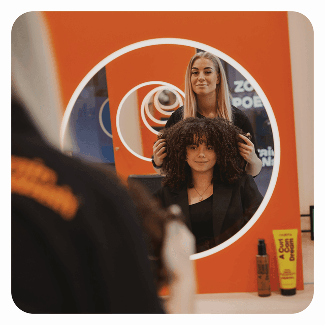
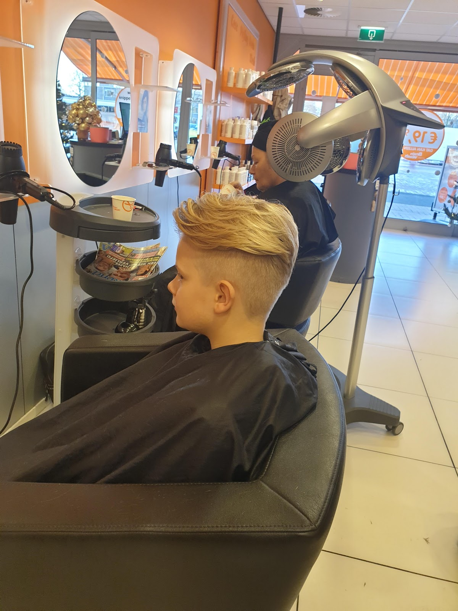
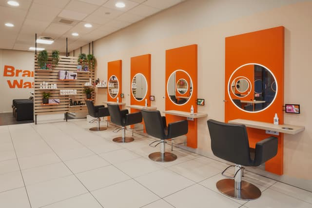
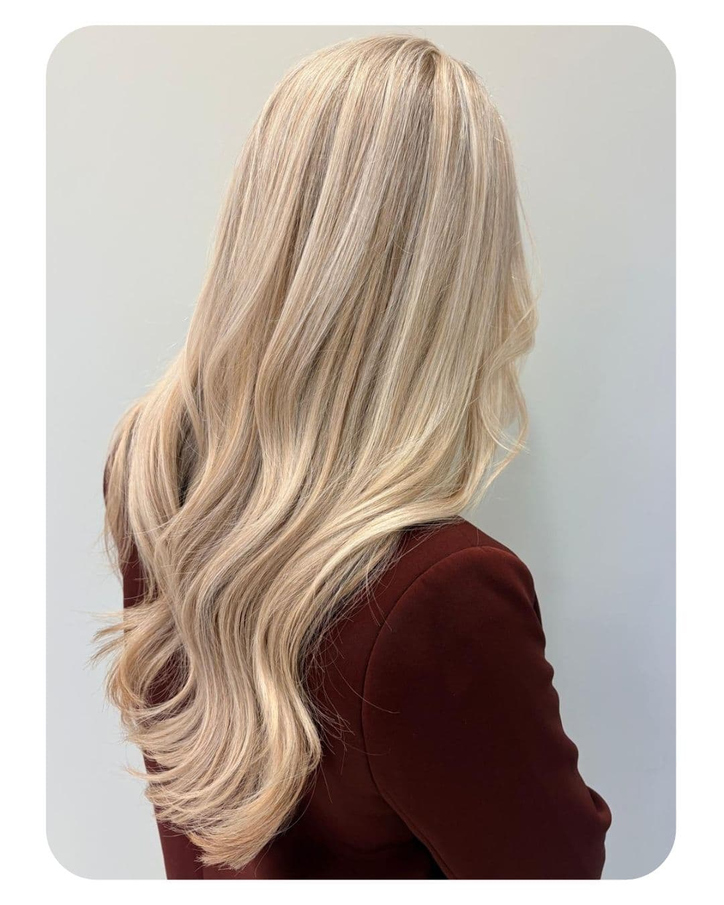
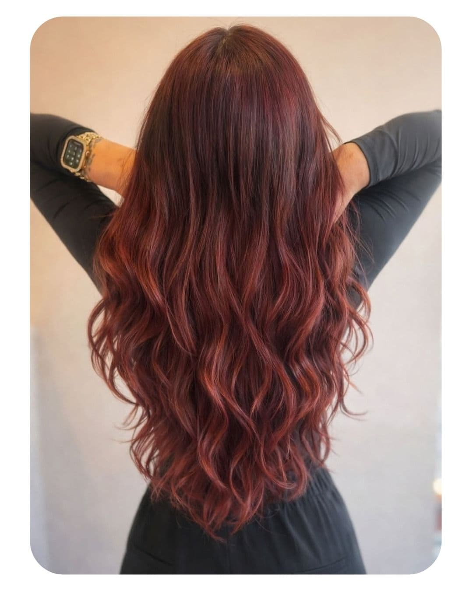
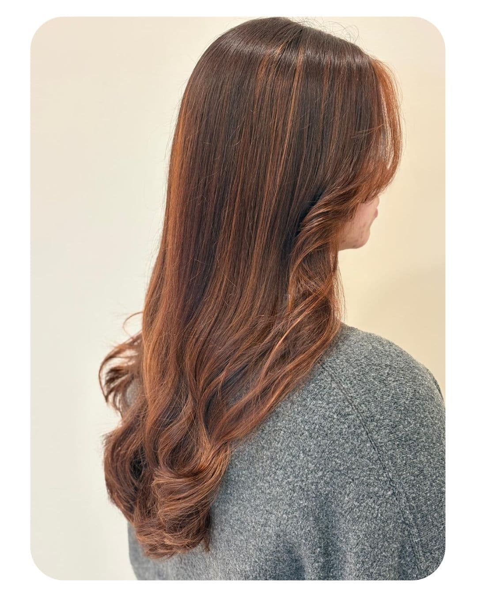
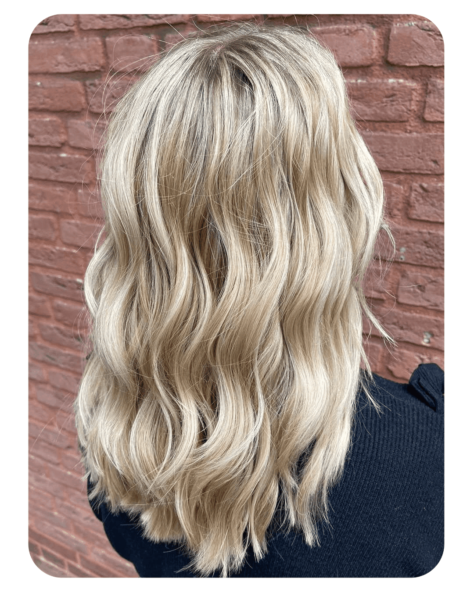
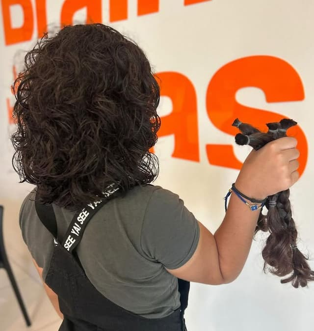
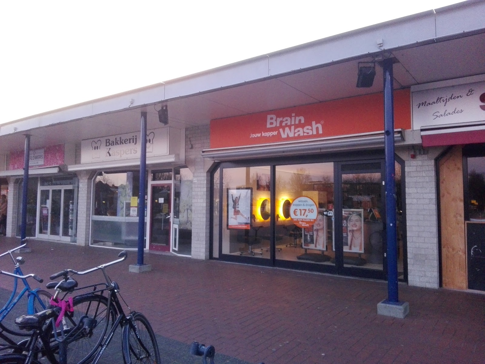

De Bongerd 67, Doetinchem
Je kapper op De Bongerd.
Wassen, knippen en drogen vanaf €25. Vlot geholpen, goed gepland, en geen gekke dingen met je haar als je daar niet om vraagt.
Ma t/m vr vanaf 09:00, zaterdag al vanaf 08:00.

4,3 ★
uit 103 Google-reviews
Zonder verrassingen.
Onze prijslijst is zo simpel als wat. Of het nou voor de spiegel of bij de kassa is: bij BrainWash weet je waar je aan toe bent.
- ✓Binnen 4 weken weer knippen: €12,50 korting
- ✓Binnen 6 weken weer knippen: €8,50 korting
- ✓Student? Ma t/m do €2,50 korting op knippen
Wassen, knippen, drogen
- Terug binnen 4 weken
- €25
- Terug binnen 6 weken
- €29
- Alle haarlengten
- €37,50

Lekker vlot, en je houdt tijd over.
Onze behandelingen zijn vlot en de afspraken goed gepland. Je vindt ons in het winkelcentrum op De Bongerd, tussen de bakker en de slager: boodschappen doen en knippen in één keer.

Kleur, highlights, slagen.
Werk uit onze BrainWash-salons. Neem gerust een foto mee van wat je wilt.




“Onlangs highlights laten zetten, Manon (toppertje) geeft eerlijk advies en goed meegedacht. Veel geleerd over mijn haar. Ik kom zeker weer voor de uitgroei van de highlights.”
“Vakbekwame stylist, erg goed geholpen, goede adviezen gehad. Erg blij met eindresultaat. Kom zeker nog eens terug!”
Gemiddeld 4,3 sterren uit 103 reviews op Google.

Geknipt voor een goed doel.
Bij ons kun je je haar doneren aan De Nederlandse Haarstichting. Daar worden pruiken van gemaakt, zodat vrouwen met borstkanker er kosteloos een kunnen dragen.
- Minimaal 30 centimeter
- Alle natuurlijke kleuren, ook geverfd in een natuurlijke tint en grijs
- Droog, schoon en in een staart
- Je betaalt je knipbeurt en krijgt als bedankje een gratis BrainWash Professional product naar keuze
Kom langs op De Bongerd.
BrainWash Kappers DoetinchemDe Bongerd 67
7006 NH Doetinchem
| Maandag | 09:00 tot 18:00 |
|---|---|
| Dinsdag | 09:00 tot 18:00 |
| Woensdag | 09:00 tot 18:00 |
| Donderdag | 09:00 tot 17:00 |
| Vrijdag | 09:00 tot 18:00 |
| Zaterdag | 08:00 tot 15:00 |
| Zondag | Gesloten |
